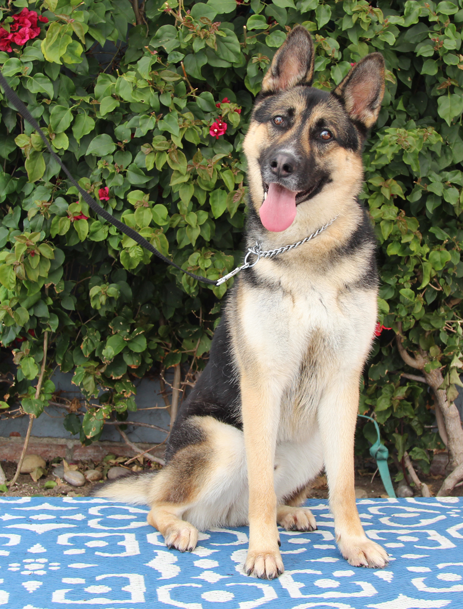
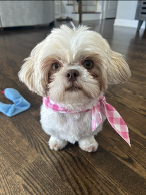

Adoptable Pets
Our adoption process is designed to help every pet find a safe, loving, and permanent home. Browse our available pets, submit an adoption application, and meet with our team to make sure the match is right for both you and the animal.

Mino
Breed: German Shepherd / Husky Mix
Age: 3 years

Bella
Breed: Shih Tzu
Age: 2 years

Portia
Breed: Dalmatian
Age: 1 year